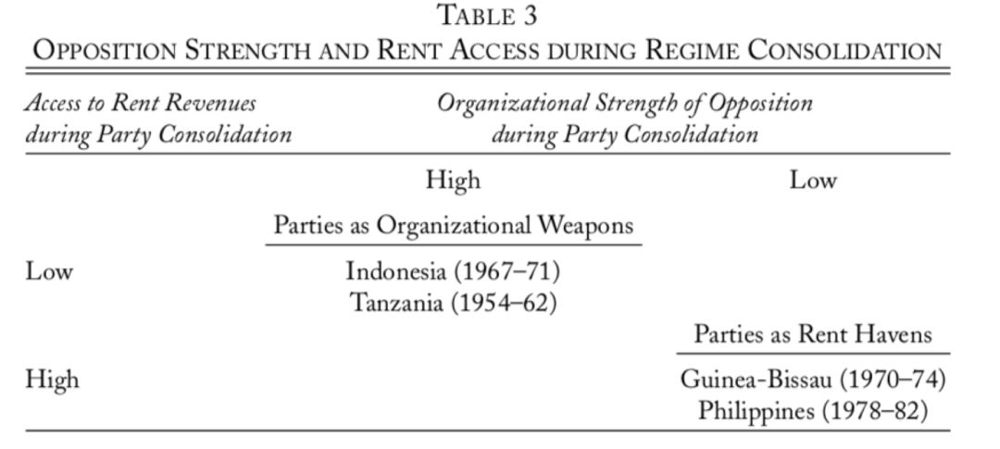
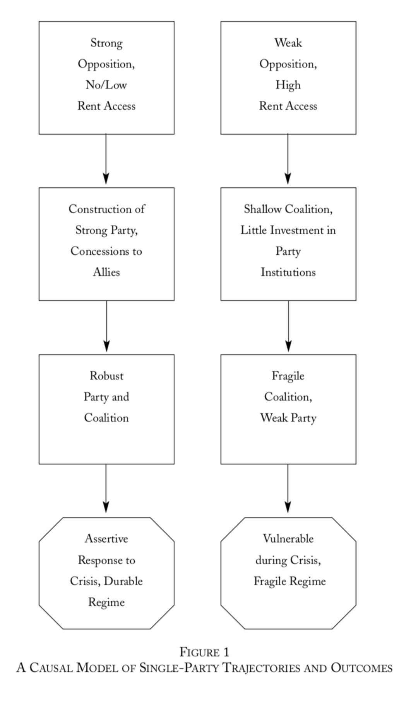

收录于合集
文献来源： Smith Benjamin. “Life of the party: The origins of regime breakdown and persistence under single-party rule, " World Politics , 57(April 2005): 421-451.
作者简介： 佛罗里达大学政治科学副教授，研究兴趣为政治秩序的经济、社会和制度基础，目前主要关注族群冲突和资源政治。
格迪斯（Geddes）曾通过经验研究证明一党制政权比其他类型的威权政体存续时间更长。亨廷顿也提出，在国家建构初期，一党制的政权往往更为稳定。但是作者通过重复格迪斯的研究发现，如果排除墨西哥和苏联两个极端值，那么一党制政权的韧性在统计上并不显著。同为一党制政权，但这个类别的国家确是天差地别。在2000年的一党制政权中，新加坡的人均GDP高达26640美元，莫桑比克却只有的人均GDP只有198美元。在国民党一党执政崩溃的前一年，中国台湾地区的人均GDP为17000美元，几内亚比绍的人均GDP168美元。在政权崩溃的前一年，一党制国家GDP增长的范围在-20%到14%之间。一党制政权在加纳和几内亚比绍只维系了六年，但是墨西哥革命制度党政权却已经维系了73年。为什么有些一党制政权能够长期存在下去，有些一党制政权的维系时间却很短？作者根据最大相似和最大差别原则，选取了几内亚比绍、印度尼西亚、菲律宾和坦桑尼亚四个案例来探究这一问题。
目前学界关于政权维系时间和克服危机能力的影响因素主要有以下几种：一是经济因素，一般认为那些遭受经济危机更频繁更严重的政权更脆弱。但实际上，作者发现经济表现和一党政权的维系或崩溃之间并没有关系。在作者选取的四个案例中，每个国家都遭遇了严重的经济危机但是其中只有两个政权崩溃了（分别是几内亚比绍和菲律宾）。二是外部力量，一般认为那些有强大外部势力支持的政权更容易存活下来。在四个案例中，几内亚比绍和坦桑尼亚有苏联的支持，菲律宾和印度尼西亚则有美国的支持。但这四个得到超级大国支持的国家并没有全部存活下来。三是认为政权崩溃更容易出现在领导人换届的时候，但是四个案例中政治危机的出现都和领导人换届没什么关系。最后一个因素是政权的镇压能力。Bellin就认为正是因为中东国家政权具有强大的镇压能力，因此才能在风起云涌的民主化浪潮中我行我素。但是在四个案例中，以政权的暴力程度来排名，最高的是印尼，其次是菲律宾，再次是几内亚比绍，最后是坦桑尼亚。最终一党政权维系时间不长的是几内亚比绍和菲律宾。从这个排名来看，似乎不能发现镇压能力和政治稳定之间有什么联系。
作者提出真正影响一党制政权维系时间和克服危机能力的因素是政党的能力。那么什么样的政党更有能力呢？亨廷顿认为越是现代的社会，其产生的政党能力就越强。但对于很多国家而言，诸如俄罗斯和中国，其强大政党的产生是先于现代社会的出现的。作者认为影响政党组织能力水平的主要因素是其领导人决定应打造一个什么样的政党时所面临的初始条件。由此作者提出了两个假设。
假设一是在政权构建之初，如果有强大且有组织的反对派的挑战，统治者倾向于将执政党打造为重要社会力量的联盟，如果没有值得一提的反对派，那么统治者们则不太倾向于通过打造一个强大的政党来维护统治联盟。
假设二是在统治者掌权时如果没有足够的收益来源，那么他们不太可能通过收买的方式来获取支持。所以在面对挑战时，他们唯一的选择是做出显著的让步。如果统治者有足够的收益来源能以收买的方式构建一个统治联盟，那么他们就不倾向于让人进入执政党的政策制定圈子来实现同一目的。
作者接着用选取的四个国家的案例来验证自己的假设。

**
**
印度尼西亚 1966-1998
苏哈托于1965年发动政变，建立起了“新秩序”政权（Dan Slater：改变威权主义——对苏哈托“新秩序”的案例研究），当时印尼正处在严重的经济危机之中。该国1965年的石油出口不及1960年的一半，当年的通货膨胀达到600%。此外苏哈托还面临着印尼共产党和在军队、政府和社会中原苏加诺支持者的挑战。为了应对这些挑战，苏哈托联合了在苏加诺政权时期遭受压迫的穆斯林和天主教徒组织（如印尼宗教学者复兴会Nahdlatul Ulama）。并支持甚至创建具有“反共”思潮的学生组织。
为了进一步将自身统治合法化，苏哈托除了构建广泛的社会联盟，还致力于建设执政党——专业集团（Golkar）。在1967年时，专业集团是一个中央集权能力不足的政党，有多达200个附属组织。为此，苏加托对政党进行了等级制的重新构造，让专业集团的各个部分能够做到如臂使指。一方面，苏哈托给党员以一定的物质刺激保障政治忠诚，另一面他直接将地方上重要的政治人物吸纳为政党成员。在“新秩序”下的第一次选举中，也就是1971年选举，本来预计只要获得三分之一的选举席位再加上非选举的任命席位就可以让专业集团成为多数党，但实际上专业集团获得了63%的选票。面对70年代多次大规模的社会抗议，苏加诺除了使用暴力镇压，往往还会立即表示做出一定的让步，在之后还会吸纳一些领导社会抗议的人士进入执政党。
坦桑尼亚 1961-
坦桑尼亚独立后的执政党早在独立前十年就已经存在了。当时的非洲民族联盟党（TANU）面临着英国殖民者的干预和破坏，并且没有足够的资源用于构建庇护网络。为了应对这一严峻状况，TANU联合了国内大量的民族组织，建立了工人联合会，还大量发动妇女和青年的社会运动。在独立后，坦桑尼亚则将首要目标转化为建立一个强大的政党。通过国家政治结构的改革，可靠的政党成员成为地方上的决策者，政党组织和国家机器紧密接合，政党力量也和国家力量相互交融。在坦桑尼亚于80年代初遭遇经济危机时，执政党有能力推动重大的改革以回应，并重组建立了新的执政党——革命党（CCM）。直到坦桑尼亚1992年进行多党制的政治改革后，革命党仍然能够维持一党独大的局面。
几内亚比绍 1974-1980
和所有西非的葡萄牙殖民地一样，几内亚比绍也是在葡萄牙1974年发生“康乃馨革命”之后获得独立的。后来掌权的几内亚和佛得角非洲独立党（PAIGC）仅仅能够有效控制国家的一部分。PAIGC领导的独立战争的难度因葡萄牙军队主要对付安哥拉和莫桑比克的游击队和弹压葡萄牙内部的政治不稳定而变得容易很多。来自殖民者方面相对较小的挑战让PAIGC缺乏吸纳地方酋长和族群力量的动机。PAIGC自从60年代中期就开始依赖苏联的援助，这也是其不依靠从乡村汲取大量资源的原因。因此PAIGC政权始终没有将其统治基础延伸到乡村。当1980年发生政治危机时，军方领导人维埃拉发动政变，缺乏社会基础的政府几乎毫无还手之力。
菲律宾 1972-1986
菲律宾总统马科斯于1972年宣布全国戒严。但实际上当时没有能用选举以外的方法对政府造成实质性威胁的反对派，随着戒严法的实施，所有反对派实际上已经对政府无可奈何了。马科斯政权同样有用于构建庇护网络的收益渠道。在戒严实施后，马科斯接管了农业和自然资源部，并由此掌握了木材收益。在70年代，菲律宾每20美元的产值就有一美元来自木材收益。马科斯不是致力于打造执政党的组织能力，而是建立起了以个人为核心、以经济利益为纽带的庇护网络。执政党新社会运动党始终没有建立一个完善的科层结构。随着菲律宾70年代末期经济形势开始恶化，马科斯用于维护个人庇护网络的资源不断缩水。在1986年因大选导致的政治危机中，马科斯在政府和军队中经营的大批力量纷纷倒戈，最终导致了马科斯政权的倒台。


政观编辑部
感谢您对学术公益品的支持！
微信扫一扫赞赏作者 __赞赏
已喜欢，对作者说句悄悄话
取消 __
发送给作者
发送
最多40字，当前共字
上一页 1/3 下一页
长按二维码向我转账
感谢您对学术公益品的支持！
受苹果公司新规定影响，微信 iOS 版的赞赏功能被关闭，可通过二维码转账支持公众号。